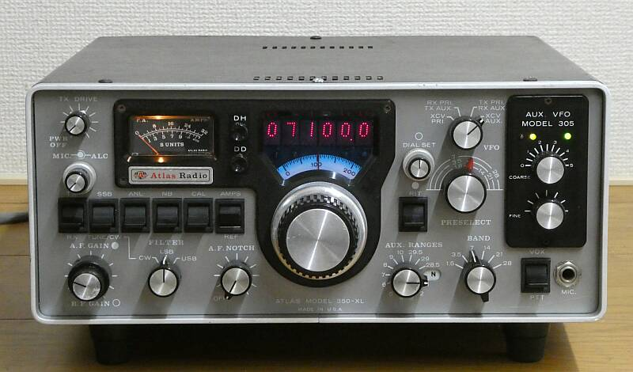 |
|
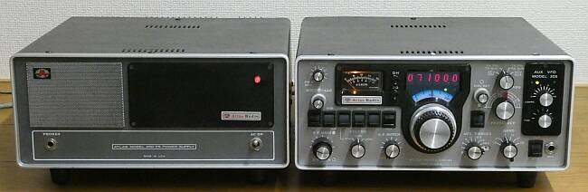 |
デジタル表示ユニット ＤＤ６-ＸＬと、ＭＯｄｅｌ ３０５ ＡＵＸＩＬＩＡＲＹ ＶＦＯ が セットされた後期モデルのようです
初期の３５０-ＸＬでは、電源ＳＷが終段部供給も含めて大型のトグルＳＷでＯＮ－ＯＦＦしていたようですが、後期モデルあるいはＸＬ ＭＫⅡでは、ＳＷ付きのドライブ調整ＶＲに置き換わっています（終段部は常に通電）
このシリーズは、１９７７～７９年にかけて１０００数百台、生産されたようです（当時＄１０００近い金額だった）
型式の３５０は、３５０WＰＥＰ入力と言う意味合いもあるようで、実際のところ３０Ａクラスの電源があれば、バンドによっては１５０Ｗくらいは出そうな感じがします
純正電源が入手できたので試すつもりです
受信はシングル・コンバージョン、 キャリアはひとつで、ＬＳＢ／ＵＳＢの切り替えは、クリスタル・フィルタで行うため、周波数読取ダイヤル・カーソルはひとつです
ＣＷフィルタも標準で装備されています
本体サイズは、３２０ｍｍ（横） ｘ １４０ｍｍ（縦） ｘ４１０ｍｍ（奥） 重量 約１０ｋｇ です
純正電源３５０-ＰＳ は、同サイズで、重量 約１２．８Ｋｇです |
|
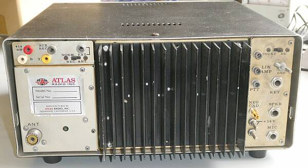
リアパネル |
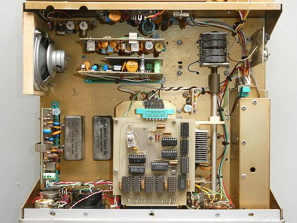
上蓋を取ったシャーシ上面
内臓スピーカーの取付方法を変更、２つのクリスタルフィルタは、ＵＳＢ/ＬＳＢ用
クリスタルフィルタの取付位置ですが、３５０ＸＬとは異なるようです
右端のシールドされた部分は、補助ＶＦＯユニット
同調ＶＣですが、上側が受信、下側が送信の段間調整用です（１軸で連動） |
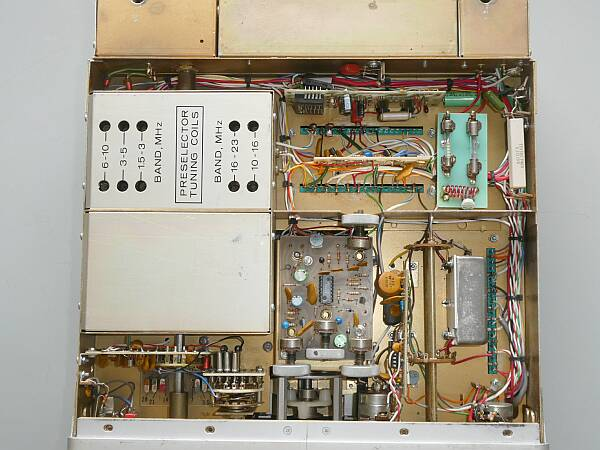
シャーシ底面の内部 右に見えるフィルタはＣＷ用、ＳＳＢフィルタの下側に配されています
ガラス管入りFuseは、終段用とそれ以外が分かれています（右上）
受信ＲＦアンプは、周波数が書かれているシールドの中、バンドＳＷの隙間にあります
中央の基板は、ＶＯＸ、サイドトーン基板で各調整つまみは下ケースに頭が出ています |
|
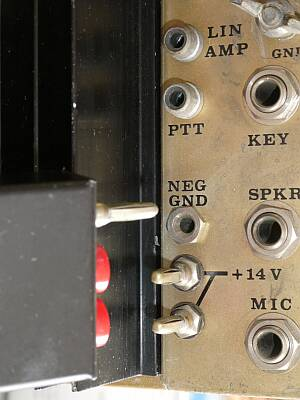
|
なかなか興味深い？電源端子です
＋２本 －1本：バナナプラグ風です
差し込むタイプのラックマウントを意識したものでしょうか
当時のパンフレットを見ると、２１０ｘ／２１５ｘ同様に使えるモバイル・マウント・キット オプションがありました
プラグイン・リムーブを簡単にするのが目的でした
写ってはいませんが、左写真の上部には、スライドSWがあり、デジタル表示部を周波数カウンタとして使用できるよう切り替えるためのもので、そのすぐ左横に信号入力端子としてＲＣＡジャックが用意されています
周波数カウンタが、まだ貴重な時代ならではの配慮です |
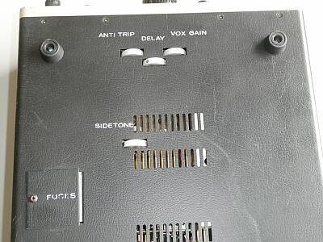 |
ＣＷ関係の調整ボリュームは、ケース底面に用意があります
ヒューズもファイナル用と、それ以外用の２つに分かれた２本が用意されています
元々足がついていなくて、手持ちのものを取り付けてはみたものの、純正の電源装置が入手できたので傾きを合わせないと・・・この後、改めて高さが合うよう足を工夫しました |
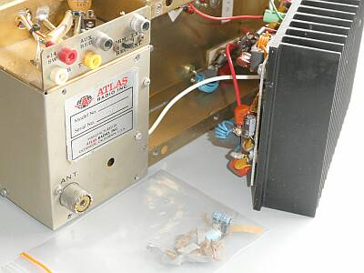 |
通電直後に、破裂音（はじける大きな音）が・・・
ファイナルユニット内で、電解コンデンサ（５０Ｖ２２μＦ）がパンクしていました
ビニル袋に入っているのは、そのパンクしたコンデンサ
過電圧でもない限りパンクはしないと思われるもので、ＲＦの回り込みを予想して、並列の０．００１μＦのセラミックコンデンサも交換しました |
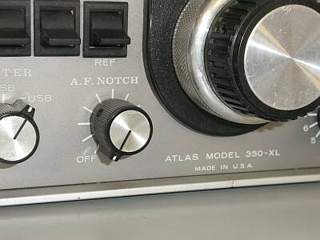 |
ＡＦ残留ノイズがわずかに聞こえるだけで、うんもすんも言いません
ＡＦノッチボリューム／ＳＷの接触不良がその原因
本機は、オーディオ検出のＡＧＣで、ここを信号が経由しないと、受信は何も無反応状態です（そう見えます）
ボリューム・スイッチ類の清掃から作業を開始です |
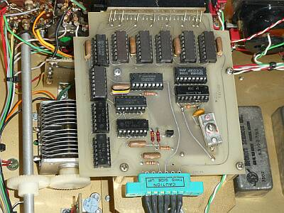 |
３５０ＸＬでは、周波数のデジタル表示オプションとされている Ｍｏｄｅｌ ＤＤ６-ＸＬ です（７セグメントＬＥＤ表示器もセットの１枚基板）
入手時点では、電源入り切りのたびに、一定の表示をしますが、まじめに周波数を表示しません
結局のところ、分周ＩＣの不良、そしてトリマコンデンサの劣化（ある範囲の周波数にないと正常に分周されない）に原因がありました
ＩＣソケットの採用は、ありがたいです
トリマは手持ちのものに交換です |
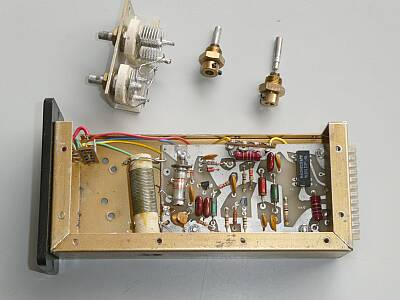 |
補助ＶＦＯユニット Ｍｏｄｅｌ ３０５ です
まず一目でわかるメカ的問題（破損！）
いわゆる補助ＶＦＯ・・・一般に外部ＶＦＯとして用意される場合が多いと思いますが、本機では内蔵されています
いわゆるＤＵＡＬ ＶＦＯです
ただし補助・・・デジタルで周波数が読み取れることが大きいのでしょうが、大きく周波数を変化させるツマミと細かく周波数が変化できるツマミの２つでカバーする仕組みとなっています（メインのＶＦＯメカとは大違い、電気的回路は同じですが）
この２つのＶＦＯダイヤルの減速機構・・・１０：１のバーニア減速機構が２つとも壊れています
またＤＩＰ型リードリレーも接触不良が見受けられました
左写真は､補助ＶＦＯユニットを取り外して、減速メカ交換のためＶＣ部を取り外したところ、この作業が結構大変！
何とか型式を調べ、まだ在庫が残っていることを確認して、知人に無理を言って手配できた、待ちに待った減速機構がイギリス（ＧＢ）より届きました
これで、補助ＶＦＯの修理が出来ます |
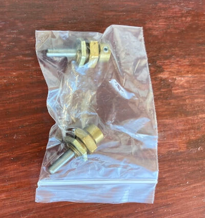 |
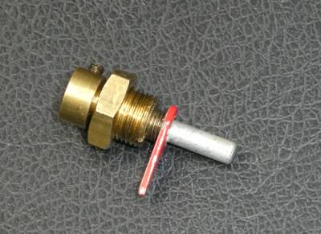 |
こちらがオリジナルのもの
赤の指針が取り付く部分が、入手できた標準品には付いていません
ＶＣ側の動きと同じ動きをする部分がツマミ軸の側にも伸びていて、そこに指針が取り付きます
ここはカスタムのようです
結果、赤の指針取付はあきらめました
あらかじめの目安はありませんが、周波数表示はディジタル表示なので、実用上不自由は無さそうです（周波数チェックに、やや手間取るくらい） |
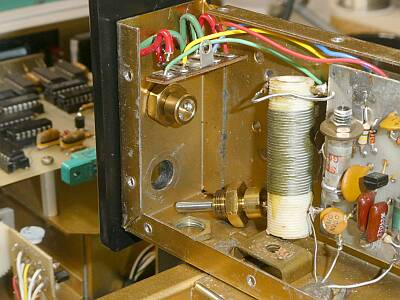 |
お気付きでしょうか？
バーニア機構のＶＣ軸径がφ６です
φ４の型式を発注したのですが・・・
ツマミの軸はφ４です
余談ですが、一般にこの手の減速装置は、減速比１／６がほとんどだと思いますが、このものは１／１０という減速比です |
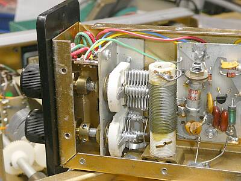 |
取付径が異なる・・・仕方がないので、φ０.８の錫メッキ線を使って、ＶＣ軸のセンター出しをしました
なんとかスムーズに、ＶＣがツマミで回せるようになりました
上側の疎調ＶＣでざっくり合わせて、下の微調ＶＣできちんと合わす、という使い方です |
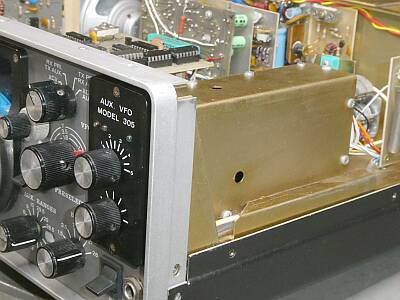 |
補助ＶＦＯユニット Ｍｏｄｅｌ ３０５を組み入れた様子です
３５０ＸＬでは、固定チャンネルユニット Ｍｏｄｅｌ ３１１と合わせて、オプションとされていたようです（排他利用） |
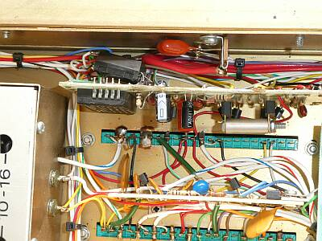 |
送信時、メーターが触れない
なんと、リレーの１回路がＮＧでした
縦に立って見える基板が、送受切替基板
ＮＧとなっている4回路リード・リレーは、新たに入手できそうに無かったので、不良の１回路だけ手持ちのリード・リレーに置き換えました
強引に追加！です（オリジナルのリレーに並列利用） |
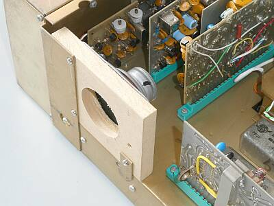 |
音色が甲高い（硬い）・・・通信と割り切って聞く分には良いのかも知れませんが疲れます
内臓のφ１００程度のスピーカーですから、致し方ないことかとも思いますが、低域が不足したあまりに硬い音色で、取付を工夫しました
本当は､もう少し大きな穴を開けたいところ、今回は横着をして、φ４２のホールソーで一発穴開けです
以前、ＡＳＴＲＯ １０２ＢＸも同様の対応をしました
音色が、ずいぶん落ち着きます
後に、純正のスピーカー内蔵電源装置が入手できたので、余分な取り組みになったかもです |
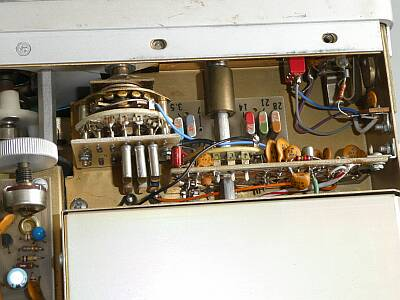 |
ＯＳＣ、Ｍｉｘ基板は、バンドＳＷに直接取付
２８ＭＨｚ帯については、５００ＫＨｚ刻みで２ＭＨｚをフルカバーしています
７MHｚ帯用クリスタルがＮＧ、特注で手当てしました
奥（下）が通常のバンド対応
左ＳＷに取り付いているのが追加バンド用クリスタル
追加のバンドとして、以下の３波が入っていました
・４．０～４．５ＭＨｚ
・８．０～８．５ＭＨｚ
・１２．３～１２．８MHｚ
補助ユニットで、固定ＣＨユニットの用意があることからも、業務（軍）使用の意識があったのかもです |
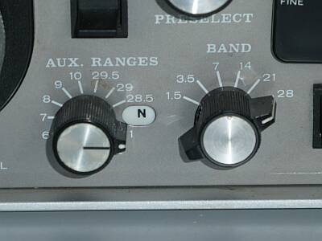 |
２～２３MHｚゼネカバ
２８ＭＨｚ帯の対応について、２８．５MHｚ以上は、この補助バンドＳＷに含まれています
あと残り１０バンドに、上記の範囲でＳＷ対応可能ということになります |
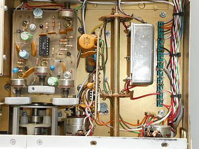 |
ＣＷフィルタは、こんなところに
ＳＳＢフィルタとは異なる配置で、ちょうどＳＳＢフィルタの裏側に位置します（モード切替ＳＷに直付けです）
左の基板は、ＶＯＸ、サイドトーン基板 |
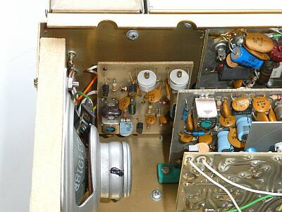 |
左サイド 正面は、キャリア発振部
キャリア用クリスタルはひとつ、CW用に８００Hzシフトさせるようにトリマが別（右側）に用意されています
クリスタルの経年変化か、高いほうにfズレがあったので、トリマに固定コンデンサを並列に入れました
一番奥の基板は、送信ドライブ段の一部
その手前は、１ｓｔＭｉｘ、ＩＦアンプ、ＮＢ基板の一部
裏が見える基板は、受信ＡＧＣ、オーディオアンプ基板の一部
スピーカーは、特製？のバッフル板に取付てます |
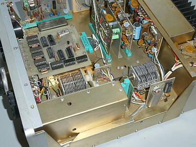 |
右サイド
手前のシールドされた部分は、補助ＶＦＯユニット
右の受信段間調整VCの手前は、２５KHｚマーカーユニット
左ＶＣは、送信段間調整用
リアパネルに取り付いているのは、送信ドライブ基板
ここに最大出力調整半固定ＶＲがあります
その左は、１ｓｔＭｉｘ、ＩＦアンプ、ＮＢ基板
一番左は、受信ＡＧＣ、オーディオアンプ基板
フィルタの奥に見える基板が、検波・変調・Ｓメーターアンプ、ＭＩＣアンプ基板 |
|
以上、ご紹介のように、今回はよく遊ばせてもらうことができました
Web上にある３５０ＸＬの資料（回路）とは、異なるところもあります
今回の復旧トライアルでは特に、JacksonBrothersのバーニア減速機構の入手は大変でした（型番を調べるところから）
英語で笑う？知人に無理をお願いしました
各種症状に、コンデンサの劣化を疑いましたが、意外にどれも正常・・・４５年経ってもです（日本製が多かった！）
送受ともトラッキング調整
送受とも、おおよそスペックを満足するように仕上がりました
詳しくは、最後に記します
|
１９７８～１９８０年頃の製品ということで、アナログ時代最後の設計でしょうか
オール・ソリッド・ステートで、周波数表示以外でデジタルの使用はありません
アナログＶＦＯで、２ＶＦＯ内臓というのも、同じアトラス系のＡＳＴＲＯ １０２ＢＸ以外、他には見当たりません
構造的には、意外と頑丈にできています
プリント基板も、全てガラスエポキシ製が採用されています
補助ＶＦＯの内臓も含め、移動運用を強く意識したものか、と思ったりもします
送受の切り替えも早く静かで、フルブレークイン風に使えそうな気がします
ＣＷで言えば、ノッチフィルタの性能は素晴らしいものがあります |
|
| Ａｔｌａｓ ３５０-ＰＳ |
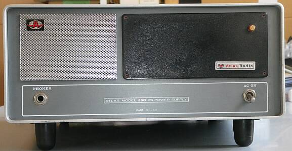 |
純正のスピーカー内蔵の外部電源装置で、約１３Ｋｇあります
公称 １４V ３２A出力で、本体と同サイズのキャビネットに収まっています
黒い目隠し部分は、どう使おうと考えられていたのでしょうね
|
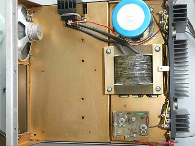 |
上ケースを取り外した様子
シャーシ上面です
極めてシンプル
スピーカーの下のスペース（実際は、右の目隠し部分）について、当時のパンフレットを見ると、ＣＷキーヤー、スピーチ・プロセッサ、デジタル時計、フォーンパッチアダプタなどの組み込みを想定していたようです（アクセサリとして、近日発売とありますが、きっと未発売です）
このままでは、持ったバランスが非常に悪い・・・後ろ側が極端に重いです |
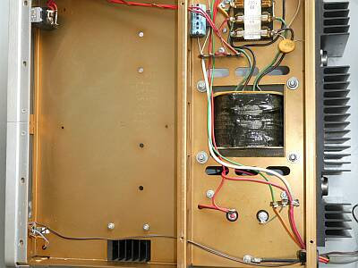 |
下ケースを取り外した様子
シャーシ下（底）面です
１１５V／２３０Vを切り替えるヒューズ端子が用意されています
下ケースを取り外すことなく切替ができるよう、本体同様のビス１本で開けられる蓋（窓）が用意されています
シャーシ下の切り欠きにご注目
整流器放熱器の対流を意識して、通気孔が開けられています
電源トランスの周囲も同様・・・ |
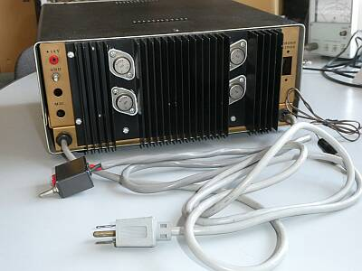 |
リアパネルです
直列制御方式の定電圧電源装置です
各ケーブルは、直接筐体から引き出されています |
|
純正電源が入手できたので、この組み合わせて、改めて送信出力を計測しました（もちろんＡＣ１１７Ｖ入力）
スペックは、１.８～２３ＭＨｚ １６０Ｗ以上 ２８ＭＨｚ～３０ＭＨｚ １００Ｗ以上とあります
１．９MHｚ帯 １５０Ｗ
３．５／２１MHｚ帯 １６０W
７ＭＨｚ帯 １７０Ｗ
１４ＭＨｚ帯 ２００Ｗ
２８ＭＨｚ帯 １３０Ｗ
短時間送信での最大出力です
終段ヒートシンクは、かなり熱くなります（連続最大出力送信には、強制空冷ファン必須です）
パワーを絞って使えるよう、最大出力レベルが半固定抵抗で調整できるようになっています（現状は最大）
受信について
感度計測では、スペックである０．４μＶ Ｓ／Ｎ１０ｄｂ以上という数字は得られていません
無信号時ノイズレベルが、やや高そうに感じます（デバイスの劣化が疑われます、長時間通電しておくことで改善があるかも）
具体的には、０．５～０．６μＶ時にＳ／Ｎ１０ｄｂ程度
実際にアンテナを繋いで聞く分には、お隣にあるＩＣ-７５６ＰＲＯ３と聞き比べて、差異は感じません
強い信号に対しては、Ｓメーターは派手に振れます
バッフル板の採用で、内臓スピーカーで聞いても、純正外部スピーカー同様に良い音（好みの音）で聞くことができています
余談ですが、バンドコンディションチェックには、補助ＶＦＯの疎調ツマミ（上段）が便利です
さっとチェックでき、バンドスコープ機能は不要か？（原始的サーチ！） |
|
| 2026.08 JA4FUQ |